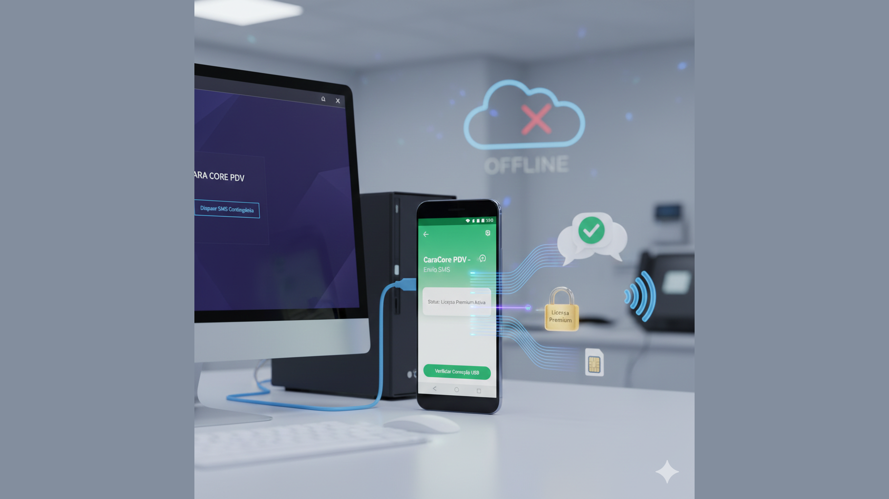

PDV Enviar SMS: o Aplicativo Auxiliar Android que é o Braço Direito do CaraCore PDV
Introdução: Quando o PDV Precisa Continuar sem Internet
O CaraCore PDV foi desenhado para uma promessa difícil: nunca parar de vender. Em modos offline e de contingência, o sistema salva as vendas localmente e, quando a internet falta por muito tempo, precisa de uma via alternativa para comunicar ao mundo — por exemplo, enviar um recibo ou um aviso por SMS. É aí que entra o PDV Enviar SMS: um aplicativo Android mínimo, instalado no celular do operador ou em um aparelho dedicado, que se torna o braço direito do PDV no chamado Enlace de Contingência.
No artigo «A "Seriedade" do Java EE Encontra o Caos do Mobile: Lições de uma Transição para o Flutter» (artigo 68), refletimos sobre o que significa levar rigor de engenharia enterprise para o ecossistema móvel: aplicações na borda da rede, modos offline, builds determinísticos e a disciplina de não tratar o mobile como “brinquedo”. O PDV Enviar SMS é um exemplo concreto e deliberadamente enxuto: não é Flutter, é Android nativo (Java); não é um app “genérico”, é um componente especializado que faz poucas coisas e as faz bem. Ele ilustra, na prática, muitas das lições que discutimos naquele texto.
1. O que é o PDV Enviar SMS?
O PDV Enviar SMS (ou pdv-sms-enviar no repositório) é um app Android que cumpre duas funções vitais para o ecossistema CaraCore PDV:
- Enviar SMS sob comando do PC: O PDV rodando no computador envia a ordem de envio através do ADB (Android Debug Bridge). O celular recebe o intent com número e texto, dispara o SMS e encerra. Não exige que ninguém toque no aparelho — ideal para automação em modo de contingência (recibos, alertas) ou em fluxos em que o PC é o “cérebro” e o celular funciona como “modem de SMS”.
- Receber e expor a licença Premium: O app escuta SMS contendo
CC-LICENSE:[CHAVE]ouCARACORE-KEY:[CHAVE]. Quando o número oficial da Cara Core está configurado, só mensagens desse remetente são aceitas. A chave é validada (formato e vigência) e armazenada. O PDV no PC consulta, via ADB e ContentProvider, o hardware_id (ANDROID_ID), a chave e se a licença está válida — tudo sem depender de internet.
Ou seja: no cenário de contingência, o PDV continua vendendo com banco local; quando precisa enviar um SMS, usa o app no celular conectado por USB. E quando a Cara Core envia a licença Premium por SMS, o app recebe, valida e disponibiliza essa informação para o PDV. Por isso ele é o braço direito: um elo confiável e previsível entre o mundo “sem rede” e o mundo “com chip e SMS”.
2. Por que “mínimo” e por que “via ADB”?
A decisão de manter o app pequeno e acionado pelo PC não é acidental. No artigo 68, falamos de aplicações na borda da rede e de evitar complexidade desnecessária. Aqui, a borda é o celular: ele tem chip, antena e permissão para enviar e receber SMS; o PDV tem a lógica de negócio, o banco e a decisão de quando e o quê enviar.
Se o app fosse “inteligente” demais — com lógica de negócio, sincronização própria, interface rica —, aumentaríamos a superfície de falha e a dificuldade de manutenção. Em vez disso, o PDV Enviar SMS segue o princípio de fazer uma coisa e fazer bem: receber ordens via intent, enviar SMS e, em paralelo, receber e expor a licença. O PC continua sendo a fonte da verdade; o app é um executor e um repositório local de um único tipo de dado sensível (a licença).
O uso do ADB pode parecer “técnico” demais para o dia a dia, mas na prática o operador ou o gestor não precisam digitar comandos: o próprio CaraCore PDV (e scripts como enviar-sms.bat na raiz do projeto) invocam o ADB. O celular só precisa estar conectado por USB, com depuração USB ativada e com a permissão de envio de SMS já concedida na primeira abertura do app. Depois disso, o fluxo é transparente.
3. Duas Funções, Um Só App

Enviar SMS
O PC dispara um intent para a SendSmsActivity com o número e o corpo da mensagem. Em modo de contingência, o PDV pode, por exemplo, enviar um recibo resumido ao cliente ou um alerta ao gestor. O script enviar-sms.bat (na raiz do caracore-pdv) usa o comando:
adb shell am start -n br.com.caracore.pdv.sms/.SendSmsActivity -e number "5541999999999" -e body "Sua mensagem"O app envia o SMS e encerra. Não há teclado, não há confirmação na tela — apenas a execução do comando. A permissão SEND_SMS é pedida na primeira abertura (na ConfigActivity); depois, o envio via ADB é automático.
Licença Premium e exposição para o PDV
O SMSReceiver escuta os SMS recebidos. Se a mensagem contiver CC-LICENSE:[CHAVE] ou CARACORE-KEY:[CHAVE] — e, quando configurado, vier do número oficial da Cara Core —, a chave é extraída, validada (formato CC-YYYYMM-{hex8}, com YYYYMM >= mês atual) e guardada. Na tela de configuração, o status aparece em vermelho (“Licença Gratuita / Inativa”) ou em verde (“Licença Premium Ativa”).
O PDV no PC obtém os dados via ContentProvider, usando ADB:
adb shell content query --uri content://br.com.caracore.pdv.sms.licenca/licencaColunas expostas: hardware_id, chave, valida (1 ou 0), mes_ano. Assim, o PDV sabe se aquele aparelho está com licença Premium ativa sem precisar de internet.
4. Lições do Artigo 68 Aplicadas ao PDV Enviar SMS
No artigo 68, destacamos a importância de builds determinísticos, de tratar o nativo com seriedade e de reduzir a superfície de ataque da aplicação. O PDV Enviar SMS materializa várias dessas ideias:
- Builds reproduzíveis: O projeto usa
build.bat(debug, release, bundle para Play Store),config.bat(detecção de JDK 11+ e de ANDROID_HOME) e Gradle com opções que reduzem variabilidade (--max-workers=1,-Dorg.gradle.vfs.watch=false). O build ocorre no diretóriobuild\do próprio projeto. Em ambientes com antivírus agressivo, há orientação para exclusão da pasta nas exceções do Defender e uso debuild.bat cleanquando necessário — o mesmo espírito de “um junior executa com confiança” de que falamos no 68. - Um componente numa arquitetura maior: O app não tenta substituir o PDV; é um módulo especializado. A lógica de negócio (quando enviar, o que enviar, como interpretar a licença) fica no servidor/PDV. O mobile faz o que só o mobile pode fazer: ter chip, antena e permissões de SMS. É a divisão de responsabilidades que, no 68, associamos a “uma lógica de negócio, múltiplas frentes”.
- Segurança por desenho: O app só envia SMS quando recebe um intent (via ADB ou outro app). Quem controla o ADB é quem tem o PC e o cabo em mãos — em geral o próprio operador ou o suporte autorizado. Evita-se lógica autônoma e maliciosa dentro do app; o “gatilho” está fora, em um ambiente controlado.
5. Na Prática: Scripts e Fluxo de Uso
Quem desenvolve ou implanta o CaraCore PDV encontra, no pacote do android-sms-enviar, scripts que automatizam o ciclo de vida do app:
build.bat: Gera o APK debug (padrão), o APK release (comkeystore.properties) ou o AAB para a Play Store (build.bat bundleoubuild.bat aab). Opçõesclean,clean release,clean bundlepara limpar e recompilar.publicar-celular.bat: Valida o ambiente (ANDROID_HOME, adb, dispositivo emstate=device, API ≥ 24), monta o APK se precisar e instala comadb install -r. Facilita a implantação em campo.verificar-app.bat: Confere se o dispositivo está conectado e autorizado, se o app está instalado e se a permissãoSEND_SMSfoi concedida. A opçãoverificar-app.bat test 5541999999999envia um SMS de teste para o número informado.enviar-sms.bat: Fica na raiz do caracore-pdv e usa o intent daSendSmsActivitypara enviar uma mensagem. Se o app não estiver instalado, o script pode abrir o app de Mensagens do sistema (aí sim seria preciso tocar em Enviar no celular — por isso a instalação do PDV Enviar SMS é recomendada).
Há ainda criar-keystore.bat, verificar-keystore.bat e recriar-keystore.bat para assinatura de releases e publicação na loja, além de BUILD-SEM-ANDROID-STUDIO.md para quem prefere montar o ambiente sem o Android Studio. O README.md do android-sms-enviar concentra requisitos, erros comuns e referências.
Conclusão: O Braço Direito que Faz Pouco e Faz Bem
O PDV Enviar SMS não é um produto de consumo nem um app “estrela” — é um componente de infraestrutura. Ele existe para que o CaraCore PDV cumpra a promessa de continuar operando em cenários de contingência e de ativar a licença Premium mesmo sem internet, usando o celular como ponte de SMS e de identidade (hardware_id + estado da licença).
Ao desenhar um app assim, mínimo e acionado pelo PC, aplicamos no mundo Android as mesmas noções de clareza de responsabilidades, builds controlados e segurança por desenho que discutimos no artigo 68 em relação ao ecossistema mobile. O resultado é um braço direito previsível: quando o PDV precisa enviar um SMS ou consultar a licença no celular, ele sabe exatamente a quem recorrer e como.
Referências
- A "Seriedade" do Java EE Encontra o Caos do Mobile: Lições de uma Transição para o Flutter (artigo 68)
2026_01_17_article_68.html - PDV Enviar SMS — README (android-sms-enviar, repositório caracore-pdv)
Documentação do app: requisitos, build, instalação, envio via ADB, licença Premium, ContentProvider, erros comuns e referências.
Hashtags
Contato
- E-mail: suporte@caracore.com.br
- Site: www.caracore.com.br
- LinkedIn: Cara Core Informática
Conecte-se conosco no LinkedIn para mais conteúdos sobre o CaraCore PDV, aplicações móveis e engenharia de software!
Seguir no LinkedIn
Artigo publicado em 28 de fevereiro de 2026
© 2026 Cara Core Informática. Todos os direitos reservados.